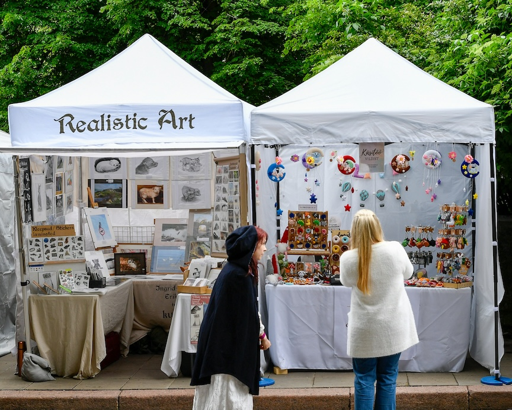

Community Spotlight: Festival in the Park

Event Overview
Festival in the Park returns to Freedom Park for its 62nd year from Friday, September 25 through Sunday, September 27, 2026, filling the lawns around the lake with roughly 180 juried artists and nearly a thousand performers. Admission has been free since the festival started in 1964, and attendance reached an estimated 150,000 people in 2024. Charlotte residents treat the weekend less like a scheduled event and more like an annual habit, arriving with folding chairs and leaving with somebody's handmade pottery.
Featured Activities
- Artist's Walk, where juried painters, potters, and metalworkers sell original pieces from 10-by-10 tents
- Lake Walk, a second artist area wrapped around the water with a minimum of $4,000 in art awards on the line
- Main Stage performances featuring regional bands, dancers, and storytellers
- The Charlotte Folk Society Stage, showcasing bluegrass and traditional acoustic music
- The Family Fun Zone, with a moon walk, climbing rocks, a choo-choo train, face painting, and a balloon artist
- Festival food row, running from funnel cakes and elephant ears to gyros, jambalaya, and bratwurst
Attendee Tips
- Admission is free and no ticket is required, so plan your budget around food, parking, and whatever artwork talks you into it.
- Paid parking runs $20 and is cash only at Atrium Health Myers Park in the 1900 block of East Boulevard, directly across from the Freedom Park entrance. Lots open Friday after 5:00 pm and all day Saturday and Sunday.
- Skip the parking hunt entirely with a rideshare. Drivers can drop off at 2435 Cumberland Avenue or 1600 Princeton Avenue.
- Leave the dog at home. Pets are banned under city ordinance during the festival, skateboards and roller blades are not allowed, and bikes and scooters must be walked.
- Arrive when Friday opens at 4:00 pm or early Sunday for thinner crowds. Saturday evening is the busiest stretch of the weekend.
- Accessible parking is available first come, first served in the Freedom Park lot on East Boulevard for vehicles displaying an NC DMV disability placard or plate.
What Attendees Say
I have been here many times,and I still find something new every year. The free admission means you can wander in for an hour or stay until the lights come on over the lake.